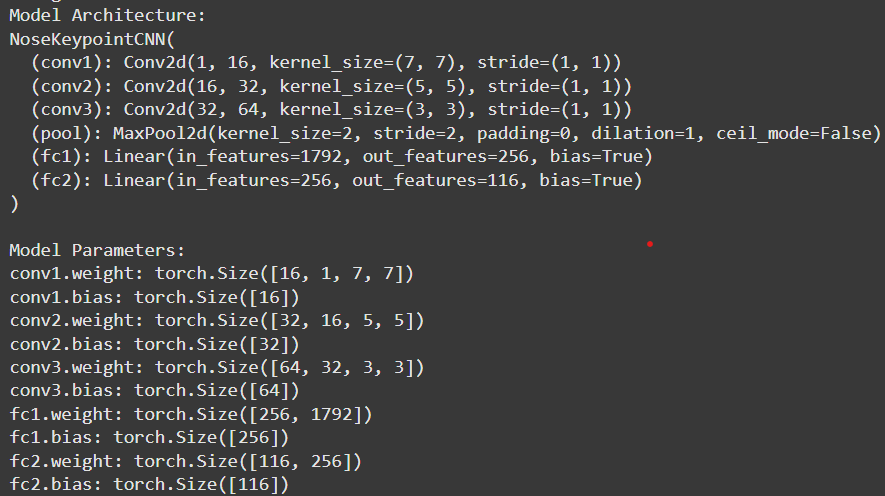
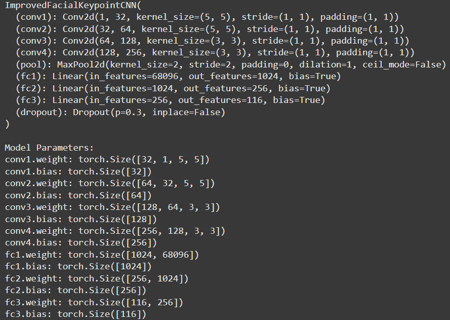
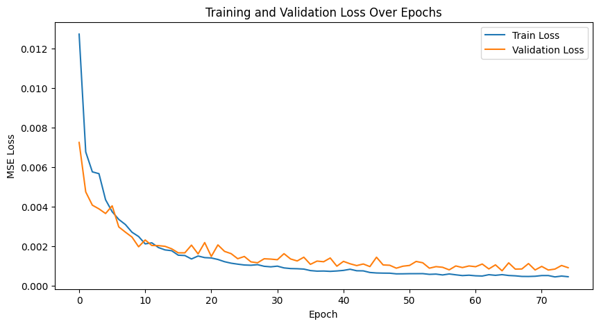
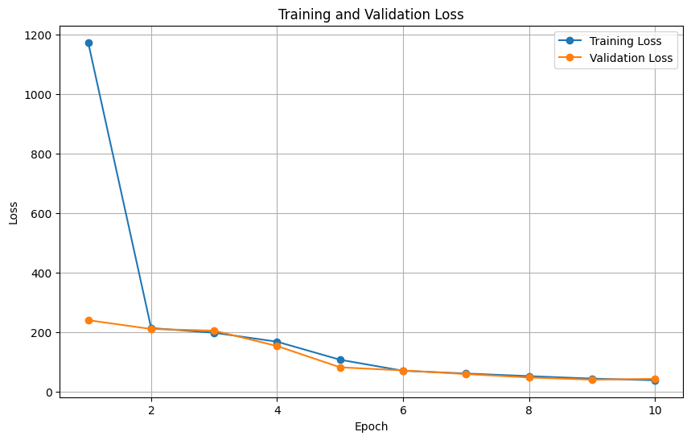
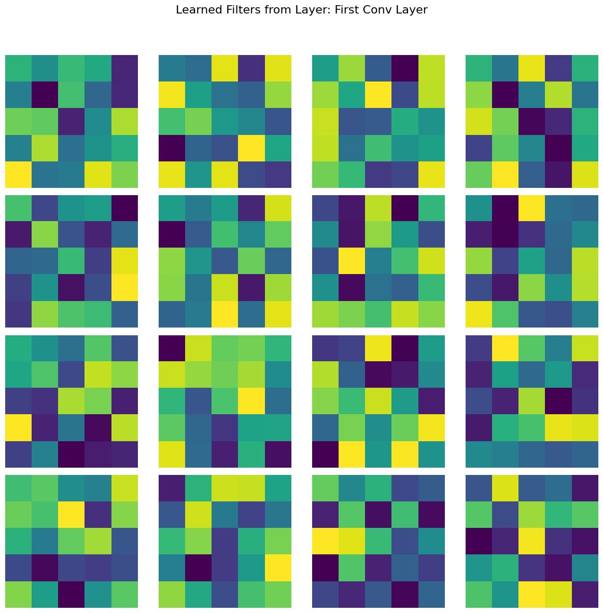
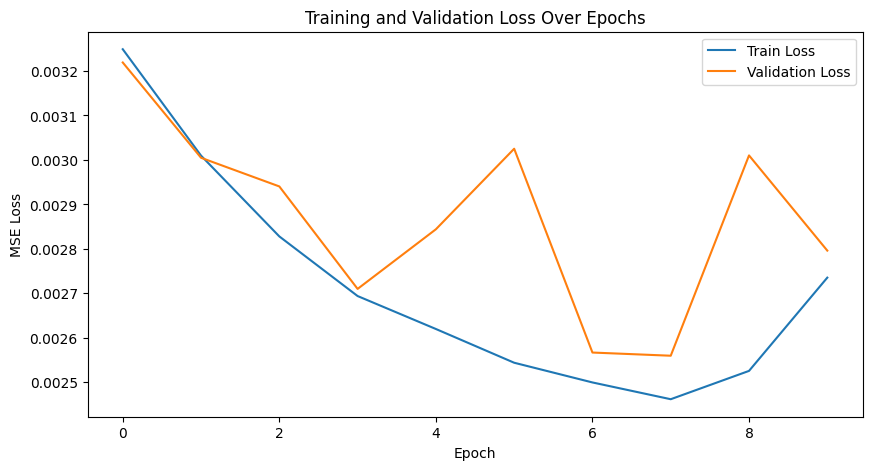
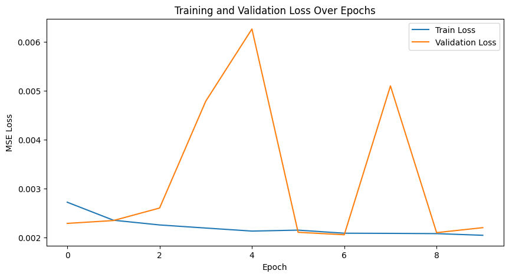
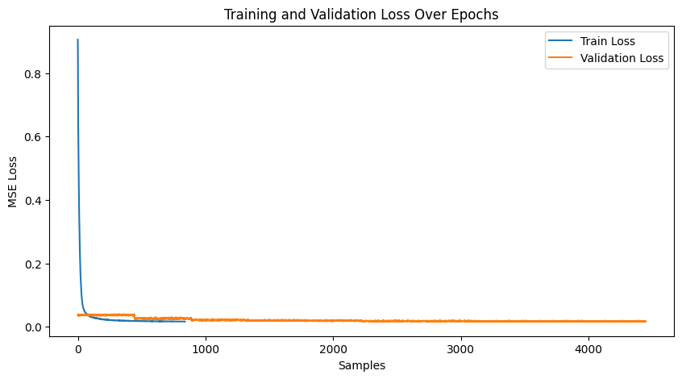

Part 1: Nose Tip Detection
Overview
In this project, we use the IMM Face Database for training an initial toy model for nose tip detection. The dataset contains 240 facial images of 40 individuals, with each person having 6 images taken from various viewpoints. Each image is annotated with 58 facial keypoints.
For training, we use all 6 images of the first 32 individuals (indexes 1-32), resulting in a total of 192 training images. The remaining 8 individuals (indexes 33-40) provide 48 images for validation.
The nose detection task is cast as a pixel coordinate regression problem. Each input is a grayscale
image, and the output is the nose tip position represented as normalized coordinates (x, y),
ranging from 0 to 1.
Data Preparation
To load and preprocess the images, we use the torch.utils.data.DataLoader. Each image is
converted to grayscale, normalized to the range -0.5 to 0.5 using the formula
image.astype(np.float32) / 255 - 0.5, and resized to 80x60 pixels.
Some sample faces from the dataset with nose keypoints labelled
Model Architecture
The model is a convolutional neural network (CNN) built using torch.nn.Module. The architecture
consists of convolutional layers (torch.nn.Conv2d) followed by ReLU activations and max-pooling
layers (torch.nn.MaxPool2d). After the convolutional layers, the network includes two fully
connected layers, with a ReLU activation after the first but not the last. Below is an image describing the precise
architecture.

Sequence of operations used was
[Conv->Relu->Pool]*3 -> [FC1->Relu] -> FC2
I initially experimented with using only 7x7 and 5x5 convolutional kernels.
However, these larger kernels proved challenging to train effectively given the
limited data and the small size of the images. They were too aggressive for this
context, and the learning rate further exacerbated the issue. A higher learning
rate was necessary to achieve sufficient training progress, but this often led to
overfitting.
In contrast, using smaller 3x3 kernels throughout the model consistently produced
better results in my experiments. While this outcome intuitively defied my
expectations—particularly considering the success of downsampling/upsampling kernels in architectures
like UNet—it demonstrates that smaller kernels can strike a better balance between
learning efficiency and generalization for this specific task and dataset.
The loss function is torch.nn.MSELoss, and the optimizer is Adam
(torch.optim.Adam) with a learning rate of 1e-3. The network is trained for 10 to 25 epochs.
batch_size = 4 because the dataset is fairly small, and we want to prevent overfitting.
Training/Validation Loss Plot
Below is an example of the training and validation loss plot over several epochs. Loss stabilizes, indicating
the need for significantly many more epochs for further improvement. At the end, the training loss was 0.000245
and validation loss was .001123.

Results
The model performs well for faces with straightforward orientation and neutral expressions. However, it struggles with images containing strong lighting contrasts, unusual facial expressions, or tilted faces. In some cases, other parts of the face (e.g., the cheekbone) are incorrectly identified as the nose tip.
Good Performance
Bad Performance
Part 2: Full Face Detection
Overview
In this section, we focus on predicting all keypoints for facial landmarks. The dataset and model architecture have to be adapted to handle larger input image sizes and include techniques to mitigate overfitting.
Data Preparation
Similar to Part 1, the dataloader code remains largely unchanged. However, this time we work with larger
input image sizes of 160x120. Given the small dataset, data augmentation is essential to
prevent overfitting. We apply the following augmentations:
- Randomly changing brightness and saturation using
torchvision.transforms.ColorJitter. - Random rotations between -15 and 15 degrees.
- Random shifts of up to ±10 pixels.
Model Architecture
With larger input images, a deeper CNN is required. For this task, we design a model with 4 convolutional layers, each followed by a ReLU activation and optionally a max-pooling layer. Based on observations from the previous section, we use only 5x5 and 3x3 convolutional kernels.
To reduce overfitting, we introduce dropout layers, ensuring that the model does not over-rely on specific
features. Additionally, a normal bias is applied to the final layer to guide predictions closer to the face,
which significantly improves validation loss. Without this adjustment, the validation loss stabilizes at a
higher magnitude. The model is trained with a batch size of 16, using the Adam optimizer (learning rate
1e-3) and MSE loss. Below is the architecture

Order of operations chosen:
[Conv -> Relu] -> [Conv->Relu->Pool]*3 -> DP -> [FC1->Relu] -> [FC2-> Relu] -> [FC3]
- We do not use max pooling in the first layer to better preserve information across layers, helping to prevent overfitting.
- Dropout accelerates convergence during training.
- The final fully connected layer does not include a ReLU activation, as suggested.
Training/Validation Loss Plot
The training process shows promise, with validation loss oscillating and decreasing over time, though the validation curve is somewhat non-smooth. Extending the number of training epochs could yield further improvements.
Results
Overall, the model demonstrates strong facial prediction capabilities. However, certain challenges remain, particularly with outlier features. For example:
- Faces with extreme tilts or contrasting lighting conditions tend to throw off the model, causing it to misidentify keypoints (e.g., predicting a cheekbone instead of the nose).
- In these cases, the neural network struggles with rare scenarios that are underrepresented in the dataset.
A key improvement would be to introduce more significant data augmentations or include additional training data with diverse facial angles and lighting conditions. Despite these challenges, the model performs well on many tilted faces, with failures limited to extreme cases.
Below are some examples:
Good Performance
Bad Performance
Part 3: Larger Datasets
Overview
In this section, we use the iBUG Face in the Wild dataset to train a robust facial keypoints detector. This dataset consists of 6666 images of varying sizes, each annotated with 68 facial keypoints. These keypoints represent critical facial landmarks such as the eyes, nose, mouth, and jawline, making it an excellent resource for facial analysis tasks.
Data Preparation
In the iBUG dataset, faces often occupy only a small portion of the image, with the background dominating
most of the space. To address this, we crop each image to focus on the face using the provided bounding
boxes, then resize the cropped face to 224x224. After cropping, the coordinates of the keypoints
are updated accordingly to maintain alignment with the resized face.
To improve model robustness and prevent overfitting, we apply the same data augmentation techniques as in Part 2. Some examples (these also have predictions, but you get the point).
Model Architecture
For this part, we use the standard ResNet architecture. Specifically, ResNet18 is a good choice due to its simplicity and efficiency. Two key modifications are required for this task:
- The first convolutional layer is adjusted to accept a single grayscale channel instead of three RGB channels.
- The final fully connected layer outputs
68 * 2 = 136values, corresponding to the(x, y)coordinates of the 68 facial landmarks.
Training is performed with the following hyperparameters:
- Learning rate:
5e-3, with a weight decay of1e-5for faster convergence. - Batch size:
64, to efficiently utilize the larger dataset. - Epochs:
10, though more training epochs could further improve results.
Training/Validation Loss Plot
Training and validation loss trends indicate steady progress, though training more epochs could yield better results. Below is a plot of training and validation loss over iterations:
Results
Here are the learned features for the model: 
The trained model performs exceptionally well, with nearly perfect keypoint predictions on most test images. However, there are some notable failure cases:
- Faces in low-brightness conditions often result in less accurate predictions. Also, the model is bad at predicting keypoints for darker skin-tones. More subtle and smart data augmentations (or a more diverse dataset) is likely the answer.
- Blurry images and non-human faces, such as statues, also present challenges.
Despite these limitations, the model demonstrates strong generalization and consistently accurate predictions. Below are a few test results:
Good Performance

Bad Performance
Testing Set
Now for a few images that the model was not trained on:Part 4: Pixelwise Classification
Overview
Newer keypoint detection networks, such as those proposed by Toshev et al. (2014) and Jain et al. (2014), reframe the regression task of predicting keypoint coordinates as a pixelwise classification problem. These models predict the likelihood of each pixel being a keypoint, enabling finer alignment of predictions with image features.
To supervise the model, the ground truth keypoint coordinates are converted into heatmaps by placing 2D Gaussians at the true coordinate locations. During inference, the heatmaps are transformed back into coordinates using methods like a weighted average over the heatmap or other localization techniques. This setup offers an effective way to train keypoint detection models while maintaining high spatial accuracy.
Data Preparation
We utilize the same dataset and data augmentation techniques as before. However, a key challenge in this approach is managing the conversion between keypoints and heatmaps. Currently, I lack a robust and precise algorithm for converting heatmaps back into keypoints. This limitation introduces some inaccuracies even in the simplest scenario: converting keypoints to heatmaps and then back to keypoints. These inaccuracies can propagate through the model training process, ultimately affecting prediction quality. To address this issue, incorporating a more sophisticated method, such as non-maximum suppression, could help accurately identify keypoints from heatmaps. Such techniques would ensure that the model is better equipped to handle the keypoint localization task, leading to more reliable and consistent predictions. However, this is not the point neither the scope of this project.
Model Architecture
The model uses ResNet18. The first layer is modified to accept
grayscale images as input, and the final layer outputs 68 (56,56) heatmaps.
Training is conducted using the following setup:
- Loss Function: We compared Mean Squared Error (MSE) loss and log loss. Log loss proved superior, which as always makes sense for pixelwise classification tasks.
- Learning Rate: Set to
5e-3for faster convergence. - Batch Size:
64to handle the larger dataset efficiently. - Weight Decay: Used to improve convergence speed and regularization. Set
1e-5 - Training Epochs: 10 epochs (split into two phases for a total of 20 epochs).
Challenges such as vanishing gradients when using Gaussian-based heatmaps were mitigated with batch normalization and weight initialization. Without these techniques, the model frequently predicted zero values due to gradient disappearance.
Training/Validation Loss Plot
The model was trained in two phases for a total of 20 epochs. The training and validation loss plots are shown below. While the validation curve stabilizes quickly, there is room for improvement in the model architecture to achieve better results. It seems as though with logistic loss, there is slightly better scope for improving validation across epochs.
MSE Loss Plot


Logistic Loss Plot
